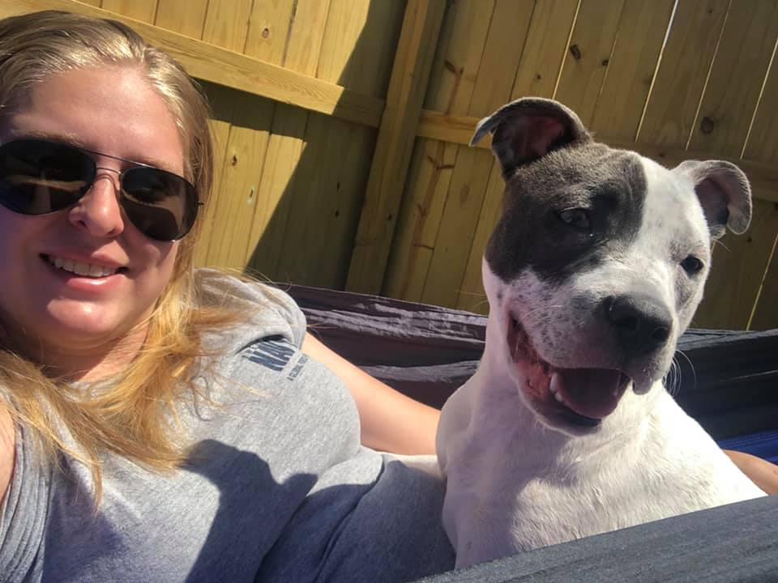

Originally from Beaufort, NC, Patrick moved to the Charleston area in 2010 as an attempt to leave his small town in search of better opportunity. In doing so, he met his now wife Leigh while working at a Ruby Tuesday in North Charleston. He went on to earn a degree from Trident Tech in the field of Computer Programming. Patrick started homebrewing back in 2014 and ended up discovering it was one of the most enjoyable things he had ever done. He has made many friends since his move to the Charleston area, but he and Alex share the passion for brewing that made Zookeeper Brewing what is it today.
Leigh
Co-Owner
Originally from Greenwood, SC, Leigh moved to Charleston looking for a change of scenery. She ended up meeting her now husband Patrick while they both worked at a Ruby Tuesday together in North Charleston, where they formed many friendships that last to this day. After a few years, Patrick convinced her to finally try and get out of the food and bev industry and she dove head first into the veterinarian field as a surgical vet tech at Charleston Animal Society where she stayed for several years before deciding to dive into the brewery game. She started out as a first-rate taste tester for Pat and Alex and in the end coming aboard to help out with their adventure.
Alex
Co-Head Brewer/Owner
Alex is from Petoskey, MI. He joined the US Navy after graduation and has called many places home. While stationed in San Diego, he met his wife Kelsey and ended up being transferred to Charleston some years later. He shares the passion his grandfather had for craft beer and brewing, and now is continuing that great work here at Zookeeper.

Kelsey
Co-Owner
Originally from North Carolina but has called many places home due to her Naval Career. Before her move to Charleston, she was stationed in San Diego where she retired from the Navy. There she met her husband Alex, whose naval career brought them to Charleston. Kelsey has since started school to become a veterinarian technician. She loves animals and great craft beers. Zookeeper is now her home away from home.